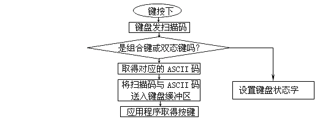

图6-13 按键处理流程
解决这个问题已不能使用16H中断的0号功能了，因为这个功能在没有键按下时会循环等待，所以程序应用这个功能就不能完成10秒定时发声。怎样才能达到要求？我们可以设想如果能够在键盘的确有键按下时才调用16H中断的0号功能，而在无键按下时去完成定时工作，这样就可解决问题。这里就要用到16H中断的1号功能了。请看BEEP.ASM程序。
code
main
segment
assume
org
proc
in
cs:code
100h
far
al,61h
；打开定时器发声
| 第6章 文字输出与键盘输入 | -165- | |||||||||||||||||||||
| 数据，这些数据当然不能放在ROM中，因此BIOS程序就在中断向量表的上面开僻了一块空间专用于保存自己的数据，我们一般称其为BIOS数据区，这便是40H段的由来。本书的附录中列出BIOS数据区的详细内容，需要时大家可以查阅。 | ||||||||||||||||||||||
|  图6-13 按键处理流程 |
||||||||||||||||||||||
| 表6-5 16H中断的功能 | ||||||||||||||||||||||
| 功能号 | 用途 | 说明 | ||||||||||||||||||||
| 00 | 等待键盘输入字符 | AL=ASCII码 | ||||||||||||||||||||
| AH=按键扫描码 | ||||||||||||||||||||||
| 01 | 从键盘缓冲区内读一个字符 | ZF=0：AL=ASCII码 | ||||||||||||||||||||
| AH=按键扫描码 | ||||||||||||||||||||||
| ZF=1：缓冲区内无字符 | ||||||||||||||||||||||
| 02 | 取键盘状态字低8位 | AL=键盘状态字低8位 | ||||||||||||||||||||
|
根据表6-5可知1号功能用于判断键盘缓冲区是否有字符可供读出，2号功能用于取得键盘状态字的低8位。这两个功能看上去好象不大常用，实际上1号功能还是十分有用的。请考虑编制这样一个程序：打开定时器发出10秒钟的声音（频率不限），在这十秒钟内若Esc键按下则关闭定时器并结束程序，否则10秒钟后停止发声并结束。 解决这个问题已不能使用16H中断的0号功能了，因为这个功能在没有键按下时会循环等待，所以程序应用这个功能就不能完成10秒定时发声。怎样才能达到要求？我们可以设想如果能够在键盘的确有键按下时才调用16H中断的0号功能，而在无键按下时去完成定时工作，这样就可解决问题。这里就要用到16H中断的1号功能了。请看BEEP.ASM程序。 |
||||||||||||||||||||||
|
BEEP.ASM code main |
segment assume org proc in |
cs:code 100h far al,61h |
；打开定时器发声 |
|||||||||||||||||||
| Copyright © 2004-2005 Chunk Lee | www.nucstorm.com | |||||||||||||||||||||